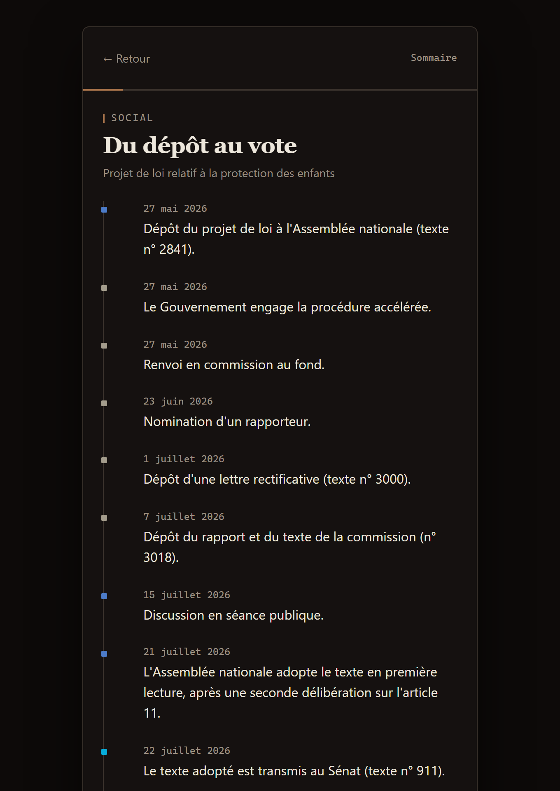
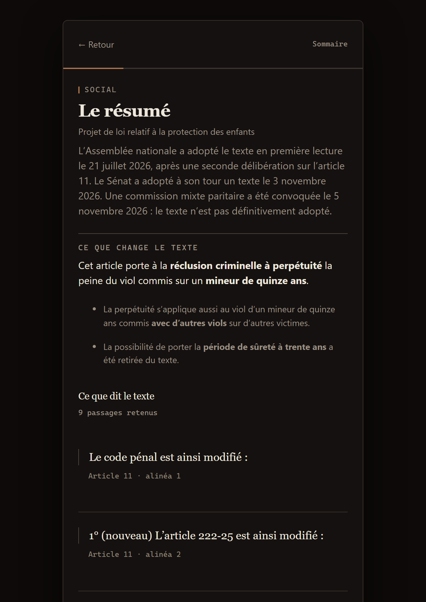
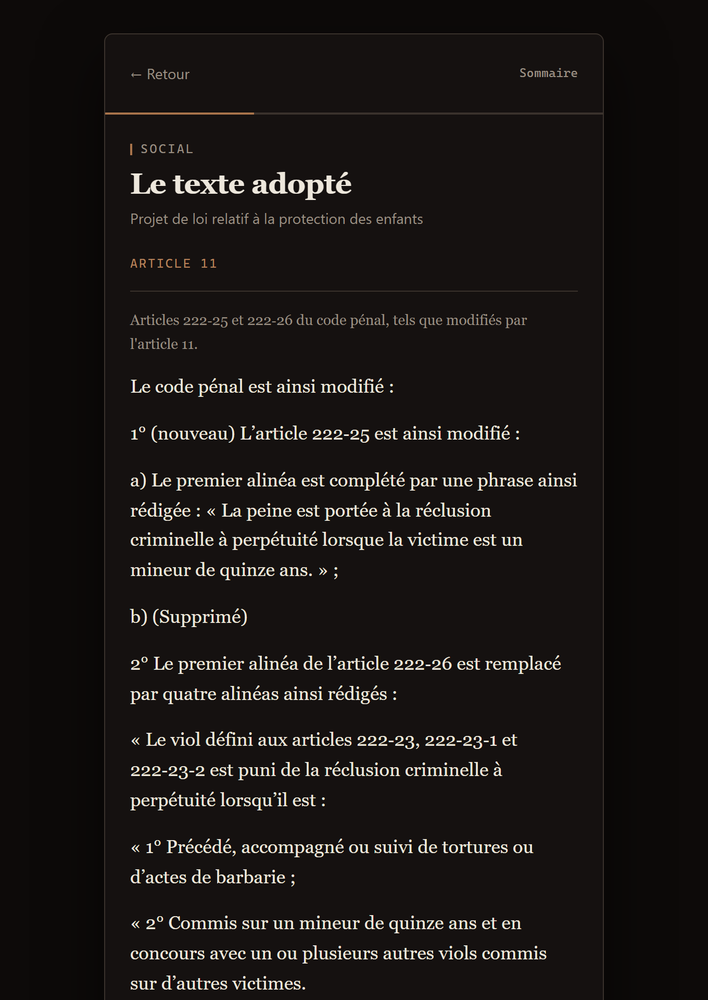
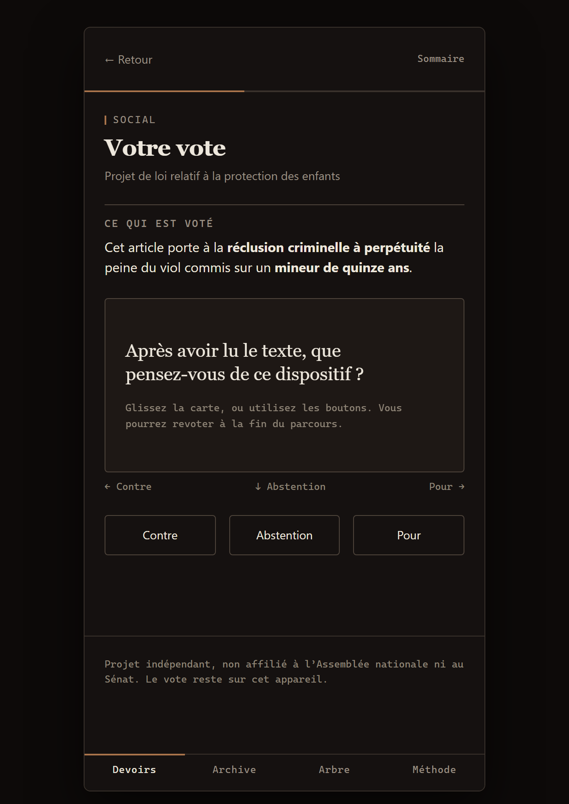
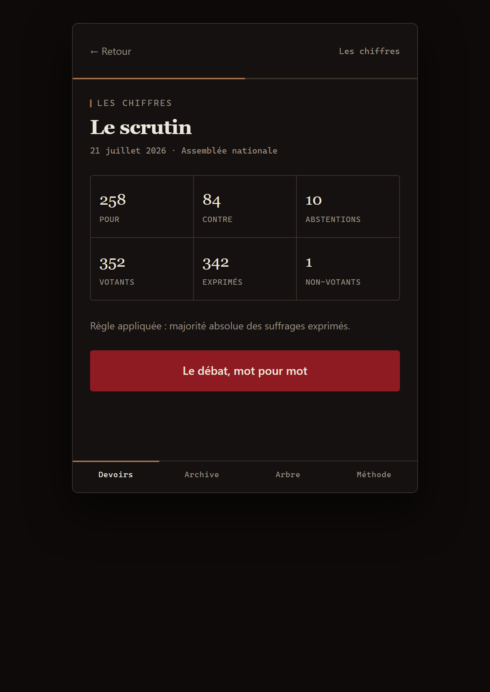
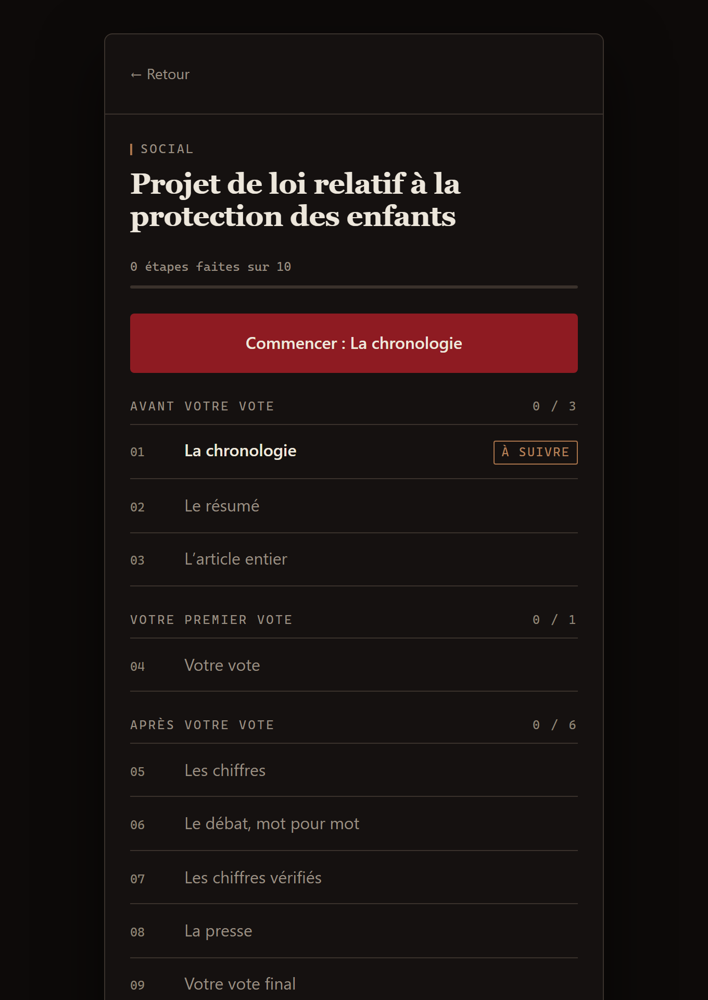
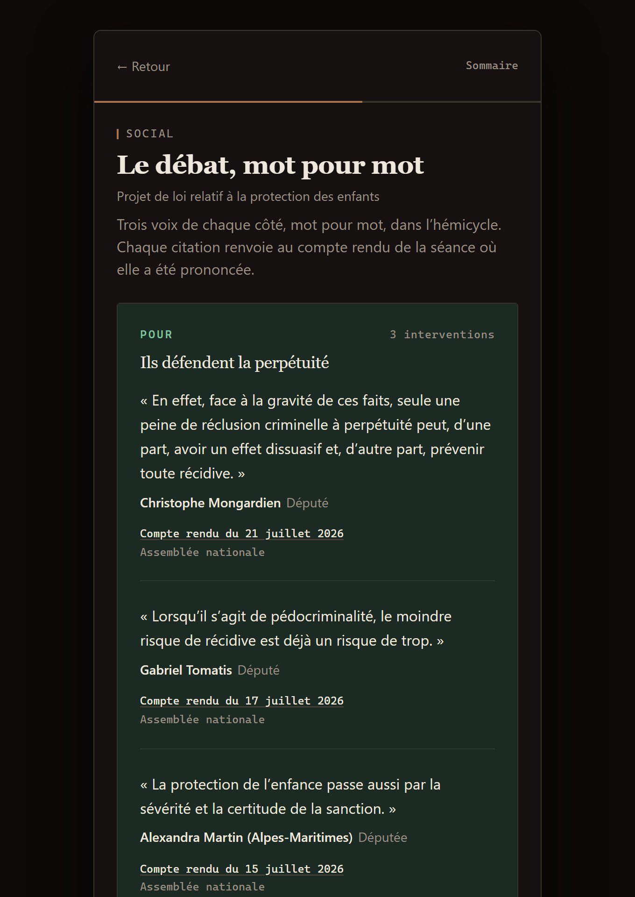
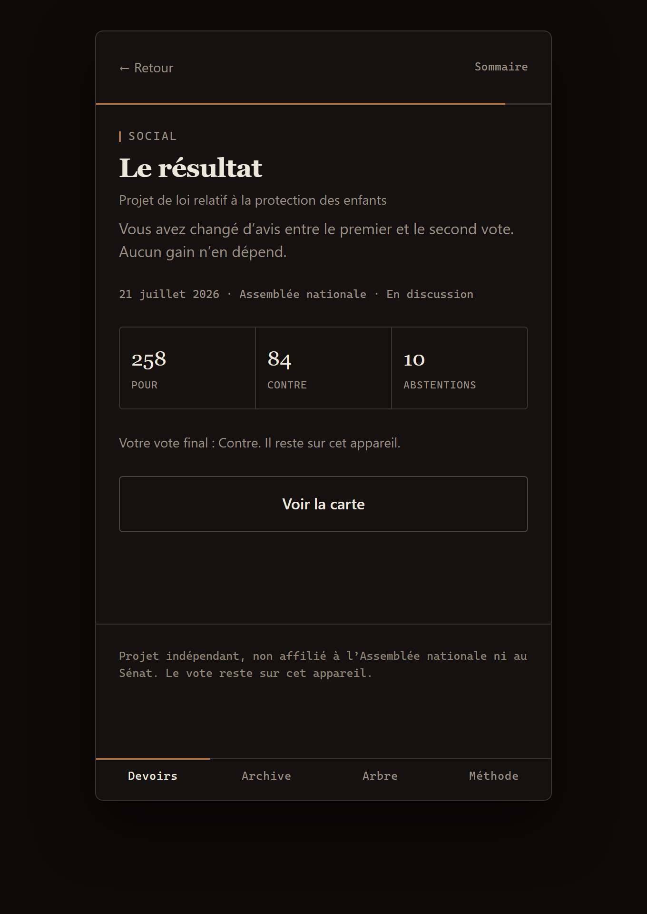
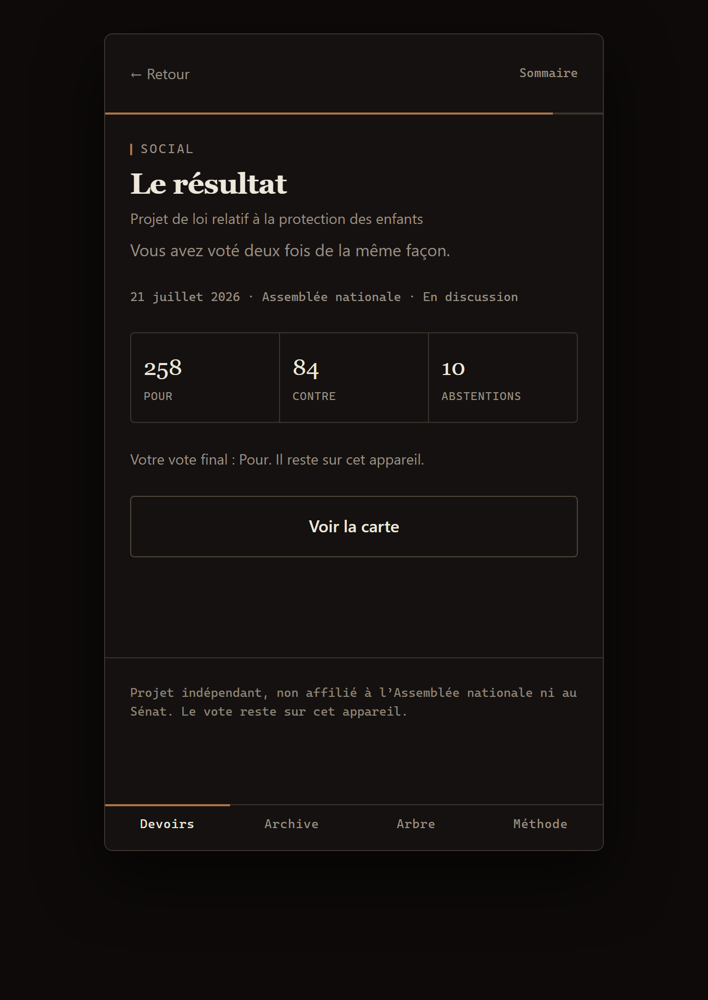
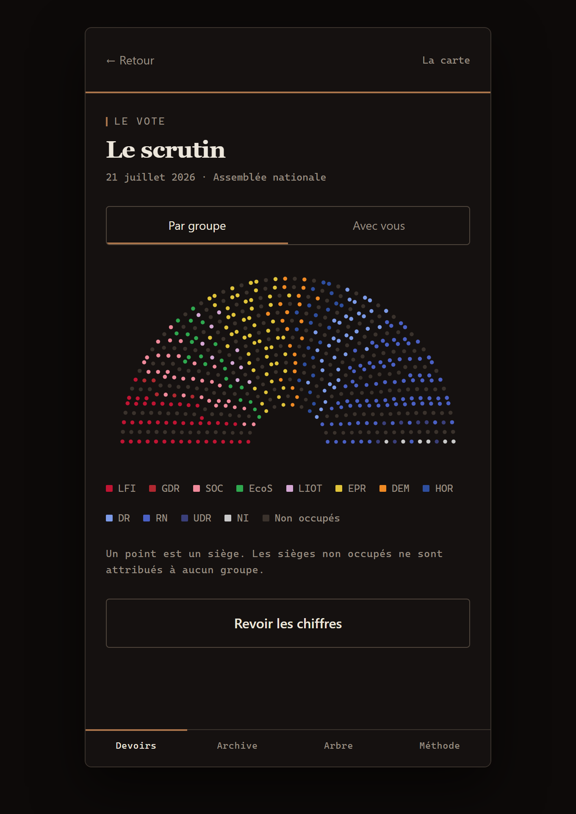

Le débat sans le peuple.
Ouverture
Trois mesures
2015 – 2026
Sources : Reuters Institute, Digital News Report 2026, fiche France. CEVIPOF, baromètre de la confiance politique, vagues 16 et 17.
-
−22 points
Intérêt pour l’actualité en France : 58 % en 2015, 36 % en 2026.37 % évitent l’actualité parfois ou souvent.
REUTERS INSTITUTE · DNR 2026 · P. 13
-
65 %
Se détournent de la politique pour se concentrer sur leur vie personnelle.En Allemagne : 50 %.
CEVIPOF · VAGUE 16 · FÉVRIER 2025
-
20 %
De confiance dans l’Assemblée nationale. Plus bas niveau mesuré depuis 2009.Partis politiques : 15 %. Confiance dans la politique : 22 %.
CEVIPOF · VAGUE 17 · JANVIER 2026
Le débat continue. Il continue sans eux.
Le quorum n’est pas exigé.
Le quorum
Présents
requis : aucun
Vérifications
5 en 4 419
scrutins
Sources : règlement, art. 61, juillet 2025 ; fiche AN n° 56, juillet 2024 ; API Hémicycle, scrutin n° 8696.
Ce qu’exige le règlement
« L’Assemblée est toujours en nombre pour délibérer et pour régler son ordre du jour. »
Aucun minimum de présents. Une vérification du quorum reste possible, mais elle est rare : 0 demande sous la XIVe législature, 5 sous la XVe, 0 sous la XVIe — pour 4 419 scrutins publics.
TEXTE OFFICIEL · RÈGLEMENT, ART. 61 · JUILLET 2025 FICHE AN N° 56 · JUILLET 2024
Ce que le vote pèse
35votants
sur 577
12 octobre 2026, séance de 21 h 30 à 23 h 40. Convention d’extradition entre la France et la Colombie.
Adopté
28 pour · 5 contre · 2 abstentions
seuil de majorité : 17
API HÉMICYCLE · SCRUTIN 8696 · 14/11/2026
Le quorum n’est pas exigé. Il est rarement vérifié.
Lire. Voter. Vérifier. Revoter.
Le principe
4 gestes
8 actions
0 avis
Source : application Quorum, écrans des parcours #/devoir et #/arbre. Rien n’est envoyé.
Quatre gestes
01
Lire
La chronologie, le résumé, le texte entier. Ce qui s’est dit et ce qui s’est voté, dans l’ordre où la loi se fait.
02
Voter
Après avoir lu, pas avant. Pour, abstention, contre. Le vote s’écrit dans le navigateur : aucun compte, aucun serveur.
03
Vérifier
Les chiffres, le débat mot pour mot, les affirmations confrontées à une source, les titres de presse.
04
Revoter
Le second vote, après le débat et les vérifications. L’opinion se précise ou bascule : l’application le constate, sans conclure.
Gage de neutralité
- Source ou silencesans source : non documenté
- Aucun avis sur la loini score, ni recommandation
- Aucun chatbotdes fichiers, jamais un modèle
- Aucun point pour le voteseul le parcours compte
Ce qui s’est dit. Ce qui s’est voté.
Lire.
Lire
3 écrans
13 étapes
9 alinéas
MCP Hémicycle
LOCAL navigateur
CR compte rendu
Captures Quorum, 14 novembre 2026. Chaque vignette nomme l’appel qui a produit la donnée. Le MCP est lu hors ligne, puis recopié dans le fichier.

MCPactes · 1 crédit

MCPactes + articles_textes

MCParticles_textes · 1 crédit
Rien n’est affiché sans sa source.
Voter.
Voter
1 vote
10 étapes
0 envoi
Captures de l’application Quorum, 14 novembre 2026. Le vote est écrit sous la clé quorum.v1, dans le navigateur. Le décompte vient d’un appel au MCP, recopié dans le fichier.

MCPtexte LOCALquorum.v1

MCPresultat_scrutin · 1 crédit

LOCAL10 étapes · parcours
Après avoir lu, pas avant.
Le débat.
Le débat
4 extraits
2 séances
0 coupe
Sources : comptes rendus intégraux des 17 et 21 juillet 2026. Le MCP ne sert pas les discours : chaque citation est acceptée si elle est une sous-chaîne exacte de sa séance.
Pour · ils défendent la perpétuité
« En effet, face à la gravité de ces faits, seule une peine de réclusion criminelle à perpétuité peut, d’une part, avoir un effet dissuasif et, d’autre part, prévenir toute récidive. »
« Lorsqu’il s’agit de pédocriminalité, le moindre risque de récidive est déjà un risque de trop. »
Contre · ils la refusent
« Ce qui dissuade les potentiels auteurs de passer à l’acte, ce n’est pas la lourdeur de la peine, mais la certitude d’être pris et de faire l’objet de poursuites. »
« La perpétuité, comme la peine de mort, fait peser une telle responsabilité sur l’enfant qu’elle le silencie encore davantage. »

CRcompte rendu
Deux bords, même nombre d’extraits, même volume de parole.
Les chiffres.
Les chiffres
3 affirmations
2 confirmées
1 non
documenté
Sources : CIIVISE, rapport public de novembre 2023 et bilan du 15 juin 2026. Le rapport inter-inspections de juillet 2022 n’a pas été retrouvé en ligne.
3 %
« Moins de 3 % des auteurs sont condamnés. »
Marianne Maximi · rapporteure · 17 juillet 2026
Confirmé
CIIVISE, rapport public de novembre 2023
1 %
« Moins de 1 % des agresseurs incestueux sont condamnés. »
Mathilde Panot · députée · 21 juillet 2026
Confirmé
CIIVISE, rapport public de novembre 2023
70 %
« Dans 70 % des affaires de viol, aucun acte d’enquête n’est réalisé. »
Gabrielle Cathala · députée · 17 juillet 2026
Non documenté
Aucune source retrouvée : le rapport de juillet 2022 n’est pas en ligne.
Le verdict ne dit jamais si la loi est bonne : il dit seulement ce que la source établit. Il n’est publié que si l’affirmation a été prononcée dans l’hémicycle et rattachée à son compte rendu.
Les sources
- CIIVISE, rapport publicNovembre 2023
- CIIVISE, bilan de mise en œuvre15 juin 2026
- Rapport inter-inspectionsJuillet 2022 · introuvable en ligne
CRcompte rendu
Sans source vérifiable, le chiffre reste non documenté.
Revoter.
Revoter
2 issues
1 appareil
0 jugement
Captures de l’application Quorum, 14 novembre 2026. Écrans de résultat avec deux votes locaux de démonstration, pour puis contre, pour puis pour. Rien n’est envoyé.

MCPdécompte LOCALquorum.v1

MCPdécompte LOCALquorum.v1

MCPresultat_scrutin
Même vote ou vote changé : l’application le dit, et rien d’autre.
Une chaîne, pas un chatbot.
La méthode
10 contrôles
12 cas de preuve
1 loi publiée
Source : scripts/verifier.mjs, dix contrôles (codes WP1.1 à WP1.9) ; scripts/preuve-gate.mjs, exécution du 14 novembre 2026.
V0 · LIVRÉE
La fiche, hors ligne
Hémicycle, comptes rendus et textes officiels sont lus hors ligne, une fois par loi. L’application ne sert ensuite que des fichiers : aucun modèle, aucune clé, aucun appel réseau.
Coût mesuré : 0,08 à 0,15 € par loi.
V1 · PRÉVUE
La recherche par le sens
Le corpus est découpé en passages, indexés hors ligne. Une question renvoie des passages déjà cités avec leur source, jamais une réponse inventée.
V2 · ENVISAGÉE
La veille et l’ouverture
Mise à jour quotidienne, Sénat comme seconde chambre, API du corpus.
Le passage accepte un fichier complet, puis refuse douze fautes, une à la fois. Un fichier qui échoue n’est pas publié : aucune relecture humaine n’intervient.
Des contrôles bloquants décident de la publication, jamais un jugement.
Le corpus gratuit. La veille payante.
L’offre
Gratuit
Abonnement
Licence
Sources : README, coût de production mesuré. La redistribution commerciale des données Hémicycle n’est pas documentée.
V0 · LIVRÉE
Gratuit
- La loi du jour, en entier
- Chronologie, article, débat, chiffres vérifiés
- Le vote, privé et local
V1 · PRÉVUE
Abonnement
- La veille journalière : la fiche à jour chaque matin
- Archive thématique et séries
- Recherche par le sens
- Export et dossiers de travail
V2 · ENVISAGÉE
Licence
- API du même corpus
- Rédactions, ONG, collectivités
- Aucune donnée personnelle
Coût mesuré0,08 à 0,15 € par loi. 100 € HT ≈ 660 à 1 250 lois.
Déjà gratuitLe décompte seul est publié ailleurs (Ils votent quoi ?, 9 895 votes). L’offre est le lien entre le texte, le débat et la source.
BlocageLa redistribution commerciale des données Hémicycle n’est pas documentée.
Ce qui n’est pas vendu : le vote.
1 / 10